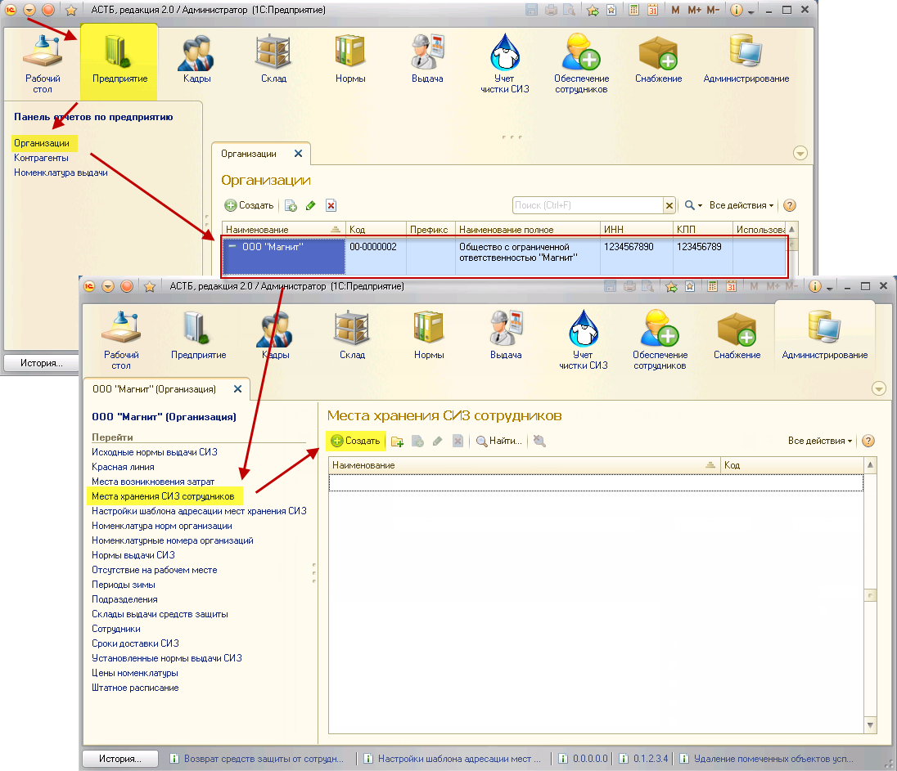
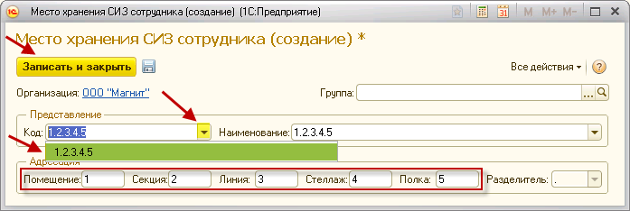
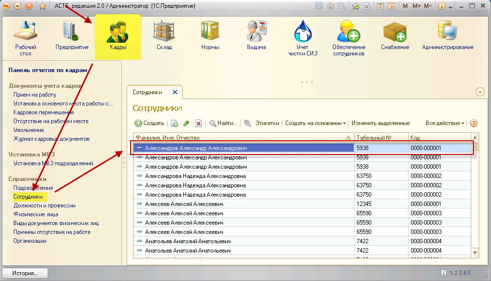
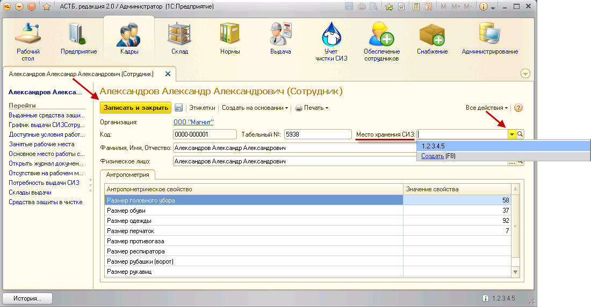

На некоторых предприятиях могут использоваться специальные места для хранения СИЗ, поступивших с чистки (чаще всего специальные шкафчики). Каждое место хранения должно быть привязано к конкретному сотруднику. Для этого нужно заполнить соответствующие справочники.
Прежде, чем создавать места хранения СИЗ, необходимо задать шаблон, по которому будет происходить нумерация мест хранения.
См. "Настройка шаблона адресации мест хранения СИЗ"
После того, как был добавлен шаблон адресации, можно создавать сами места хранения. Для этого необходимо зайти в справочник организаций, выбрать созданную фирму, пункт «Места хранения СИЗ». Добавьте новое место хранения, нажав кнопку «Создать».

Введите значения для всех элементов адреса, установленных во время настройки шаблона адресации. После этого нажмите на кнопку  в поле «Код» и выберите сгенерированное значение из списка, которое представляет собой последовательное указание элементов адреса с разделителями. Поле «Наименование» заполнится автоматически. Чтобы сохранить изменения, нажмите кнопку «Записать и закрыть».
в поле «Код» и выберите сгенерированное значение из списка, которое представляет собой последовательное указание элементов адреса с разделителями. Поле «Наименование» заполнится автоматически. Чтобы сохранить изменения, нажмите кнопку «Записать и закрыть».

Следуя вышеуказанному описанию, создайте нужное количество мест хранения.
Для привязки сотрудника к определенному месту хранения СИЗ необходимо зайти в личную карточку сотрудника. Для этого зайдите в справочник «Сотрудники», раздел «Кадры», и выберите нужного сотрудника.

В открывшейся личной карточке сотрудника нажмите на кнопку  в поле «Место хранения СИЗ» и выберите нужное значение. Для сохранения изменений нажмите кнопку «Записать и закрыть».
в поле «Место хранения СИЗ» и выберите нужное значение. Для сохранения изменений нажмите кнопку «Записать и закрыть».

Примечание: присваивание одной ячейки нескольким сотрудникам исключено, так как после назначения сотруднику она автоматически удаляется из списка свободных ячеек.